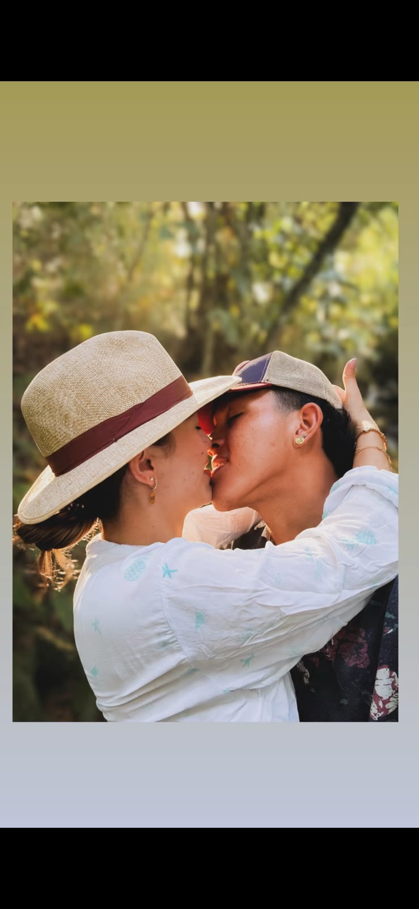
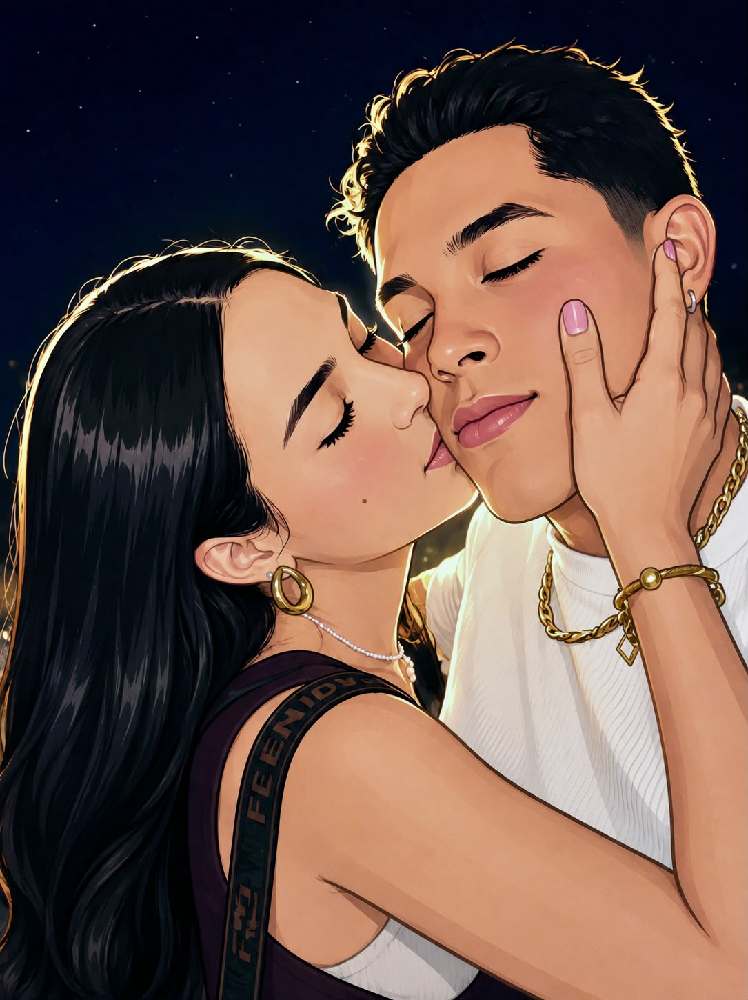
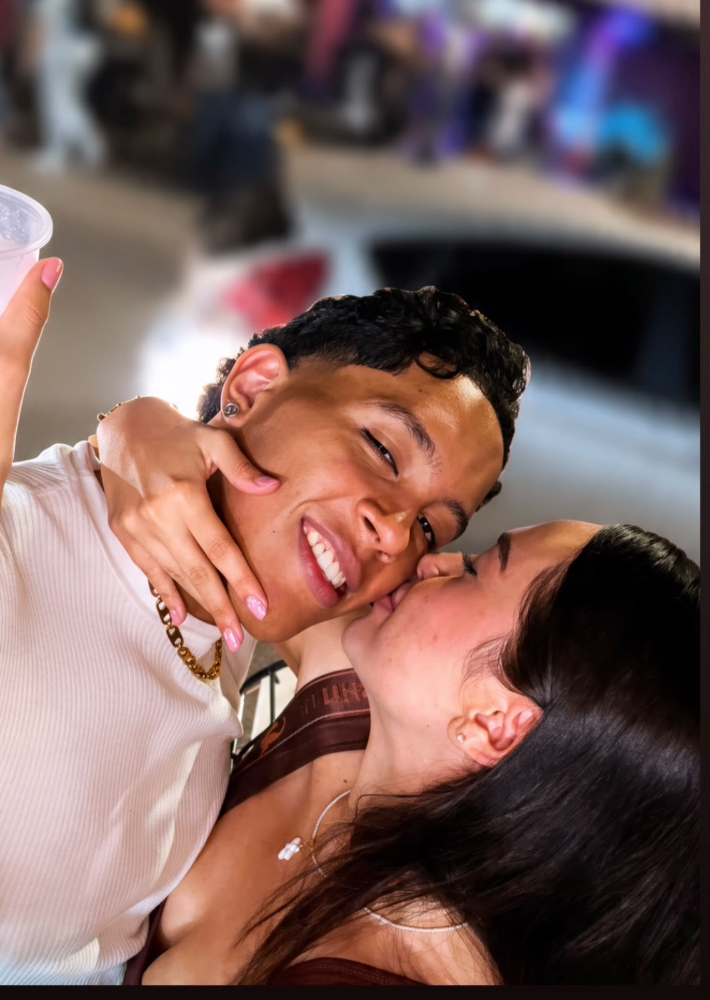
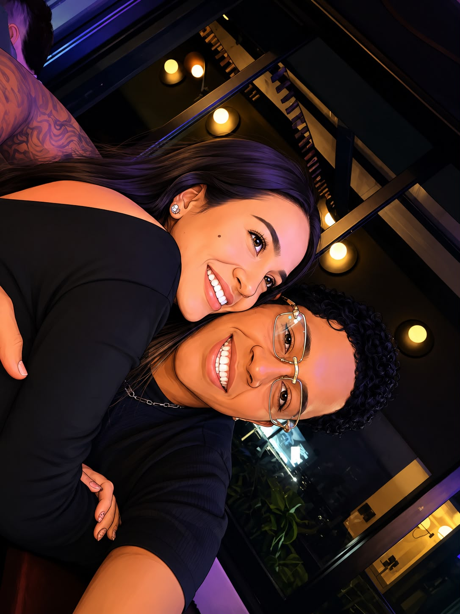
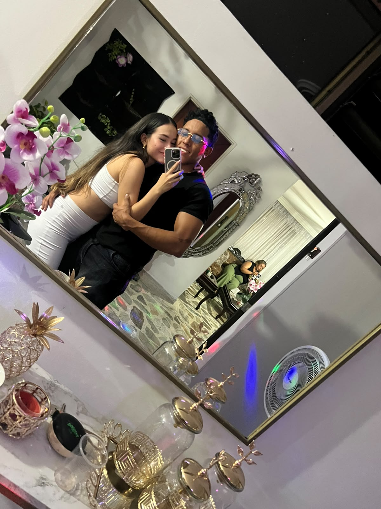

UN PROYECTO HECHO CON AMOR ♥
Hola, Samuel.
Hay aventuras que no se programan…
simplemente empiezan cuando conoces a alguien especial.
const motivo = "Tú";
Si nuestra historia fuera un videojuego…
Tú serías mi personaje favorito, mi misión inesperada y esa aventura que siempre elegiría volver a jugar.
No existe un código perfecto para explicar lo que significas para mí. Pero sí quise crear este pequeño universo para recordarte lo especial que eres.
Pequeños momentos.
Una historia enorme.
Este espacio es para guardar algunas de nuestras memorias favoritas.

Un momento favorito
Nuestra historia
Una sonrisa tuya
Mi persona favorita
Nuestra aventuraMás adelante cambiaremos estas tarjetas por tus fotos reales.
Para ti, Samuel
Hoy quería regalarte algo diferente: un pequeño lugar en internet que llevara un poquito de todo lo que siento por ti.
Admiro tu forma de ser, tu mente curiosa y esa manera tan tuya de encontrar mundos enteros en la tecnología. Si pudiera pedir algo para esta nueva vuelta al sol, sería que la vida te regale salud, tranquilidad, motivos para sonreír y muchísimas aventuras bonitas.
Y ojalá me permita seguir a tu lado, creando recuerdos, celebrando tus logros y acompañándote también en los días difíciles. No todo tiene que ser perfecto para ser valioso; a veces lo más bonito es seguir construyendo, paso a paso.
Eres mi deseo cumplido, no solo porque me encantas físicamente, sino porque cumples el modelo de hombre que le pedí a Dios para mi vida. 👩❤️💋👨
Quise crear algo diferente para ti, algo que tuviera un poquito de lo que te gusta, de lo que somos y de todo lo bonito que guardo en mi corazón por ti. Cada foto es un recuerdo que tiene una historia, y cada historia me recuerda lo especial que es tenerte en mi vida.
Sé que no todos los días son fáciles y que hay caminos que requieren más paciencia y fuerza de la que imaginábamos. Pero deseo que nunca olvides lo valioso que eres, lo mucho que mereces sonreír y todas las cosas bonitas que todavía tienes por vivir.
Feliz cumpleaños, mi niño. 🥹💙
Que la vida te regale salud, tranquilidad, muchos motivos para sonreír y la oportunidad de cumplir cada uno de tus sueños.
Y si algún día dudas de lo mucho que significas para mí, vuelve a este pequeño rincón. Lo hice pensando en ti, en nosotros y en todo lo bonito que aún nos queda por vivir.
Te amo, Samuel. ¡Feliz vuelta al sol! ✨
Con amor, Camila. 💌
La mejor parte
todavía está por escribirse.
Feliz cumpleaños, Samuel. Que este nuevo capítulo venga lleno de luz, fuerza y sueños que se hagan realidad.